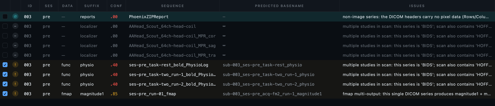
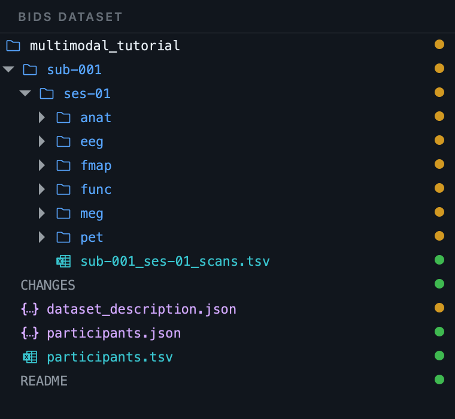
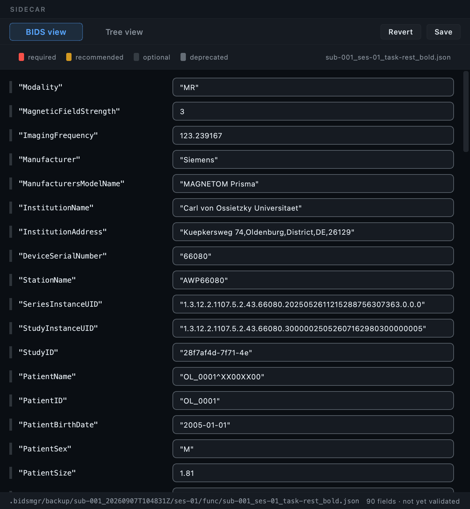
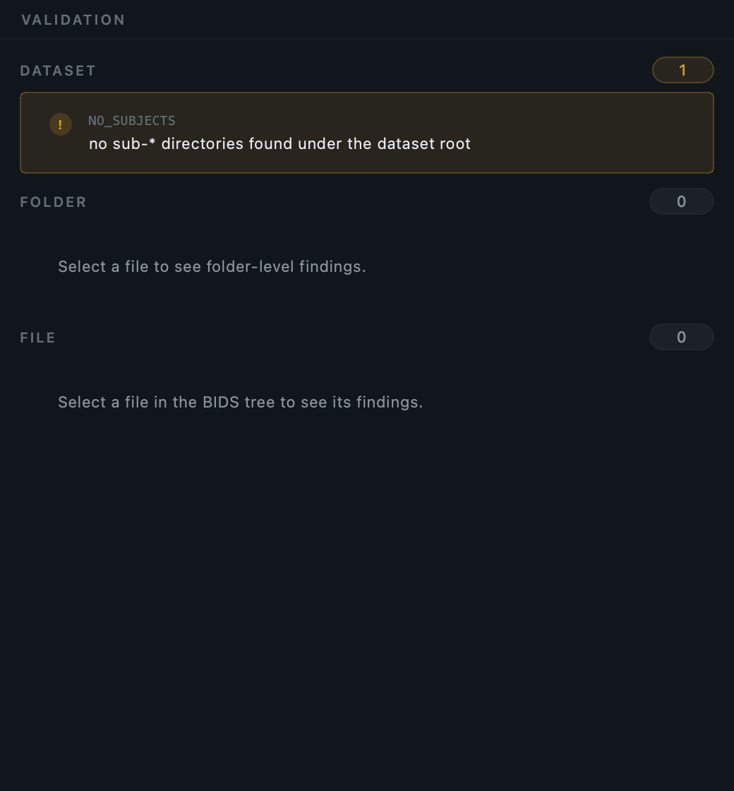
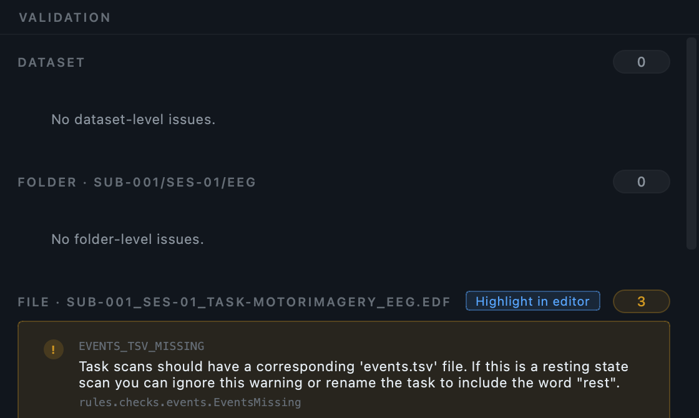
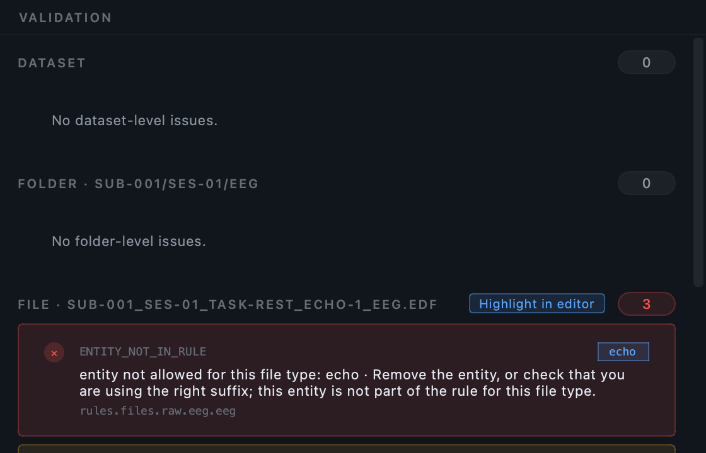
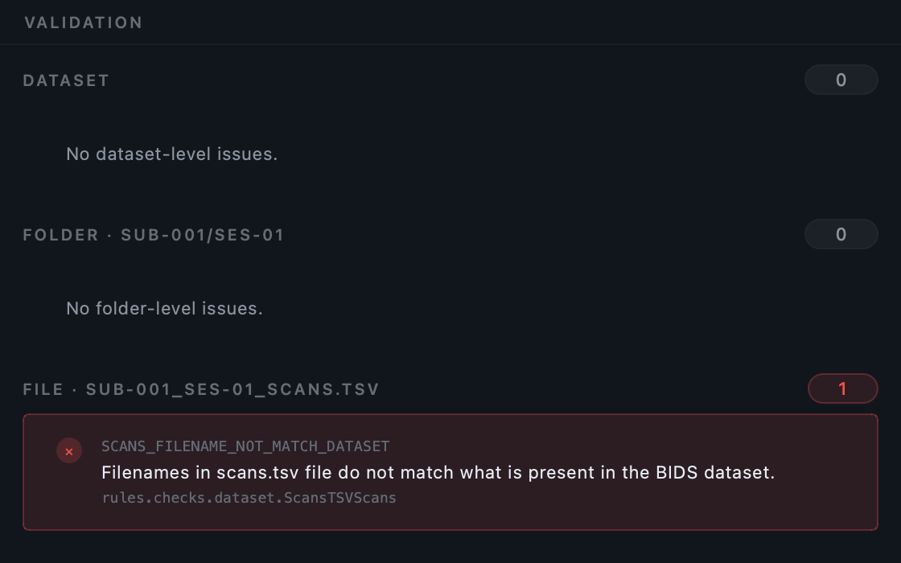

Primary walkthrough.
Small Siemens MRI dataset with T1w, T2w, BOLD, DWI, fmap, and physio. The cleanest end-to-end example, and the one the GUI walkthrough below uses.
One walkthrough from end to end. Seventeen steps take the GUI from an empty folder to a validated dataset, scanning, curating, converting, annotating and checking a real MRI dataset, and the section after them runs the same workflow from the command line. Read at your own pace, or download one of the six sample datasets and follow along on your own machine.
It looks before it converts. Other tools ask you to declare up front what each series is, in a heuristic file or a configuration. BIDS Manager scans the raw data first and shows you what is actually there: every series, every entity guess, every confidence score. The table you edit is the same one the converter consumes, so what you see is what is written into your BIDS dataset.
It is a curation and annotation tool, not only a converter. Getting the files into the right folders is the easy half. The hard half is describing them: which run is which, what the task was, what the reference and the ground were, how much tracer was injected and when. You get a table to curate, templates that ask each question once for a whole study, per-recording overrides for the exceptions, and a record of where every answer came from.
It refuses to lose your data. If two recordings would be written to the same BIDS filename, the conversion stops and tells you which two files, instead of writing one over the other.
It tells you what is wrong, and where the rule comes from. The validator is part of the same application, reads the same BIDS schema, and cites the schema rule behind every finding.
The complete workflow, explained once, for any modality. Every step of the interface in order, then the same work from the command line, then a reference for every command and flag. Where a step genuinely differs between modalities it carries a tab.
Read this to learn the tool, or to look up what a control does.
One dataset, start to finish, with the detail that only applies to that kind of data: how subjects are worked out, which metadata the conversion can and cannot answer, what the real numbers are, and what typically needs fixing afterwards.
Read one to convert data of your own, alongside a dataset you can download and follow exactly.
MRI · MRI, advanced · PET · EEG · MEG · Multimodal
pip install bids-manager works too.
Either way every conversion engine is installed with it, so there
is no second tool to fetch before you start.
See the installation guide.
You begin by creating or opening a dataset project (the work is saved into it and is resumable). From there BIDS Manager runs in eight stages, alternating user-driven and engine-driven steps. Every step below mirrors what BIDS Manager does on disk, using the same engine the CLI exposes. The full interactive diagram is on the About page.
The walkthrough below uses the primary MRI dataset (Oldenburg neuroimaging unit), but any of the six will follow the same seventeen steps. Each More info link opens that dataset's own page, with its folder tree, the real numbers from a full run, and the quirks specific to that modality. Those pages are also listed under Tutorials in the site navigation.
Small Siemens MRI dataset with T1w, T2w, BOLD, DWI, fmap, and physio. The cleanest end-to-end example, and the one the GUI walkthrough below uses.
Shows the task-name override case: filenames carry only an opaque run token (S001R01...). The user assigns the real protocol task names in the interactive table before any conversion runs.
A GE Advance phantom acquisition, the two blood curves drawn during it, and the operator's dose record. Covers the PET metadata template, attaching arterial blood to the run it belongs to, and the nine required fields no scanner writes down.
One visit through four machines, in four file formats. Produces a single inventory, three conversion engines in one pass, and the problem that makes multimodal hard: four modalities that disagree about who was scanned.
Shows automatic session inference from date-named folders. Tasks parse cleanly (driving, rest, empty-room). Demonstrates the MEG conversion path through mne-bids.
The deep dive. T1w / T2w / T2starw / FLAIR anatomicals, BOLD plus SBRef, DWI with FA / colFA / trace / TENSOR derivatives, fmap pairs, Siemens CMRR physio.
Seventeen steps, from an empty window to a validated dataset. The steps are the same for every modality; where a modality genuinely differs, the step carries a tab for it. Each step is listed separately in the page navigation, so you can come back to one of them without scrolling through the rest.
The examples use the primary MRI dataset, because it exercises
anatomical, functional, diffusion, fieldmap and physiological data
in one small folder. Only the engine behind each row changes:
dcm2niix for DICOM,
mne-bids for EEG, MEG and iEEG
recordings, pet2bids for PET ECAT and
blood curves, and bidsphysio for the
physiological signals stored inside Siemens MRI DICOM files. For
per-modality detail see the
MRI,
PET,
EEG,
MEG and
multimodal pages.
Everything you do lives inside a project. A project is your dataset folder plus a hidden record of every scan you have run and every edit you have made, so you can close the application and pick the work up exactly where you left it.
On the Home tab choose Create, give
the dataset a folder and a name, and BIDS Manager scaffolds
dataset_description.json, a README and a
.bidsignore for you. If you have worked
on this dataset before, choose Open, or pick it from
the recent list.
The name you type here is written into
dataset_description.json as the dataset
title. If you later change that name, BIDS Manager asks whether you
meant to rename the project folder as well, or to keep the folder
name and use the new one as the dataset title. It does not guess.
What you should see now: the Converter tab, with an empty inventory table and the project name in the header.
dataset_description.json, a README and a
.bidsignore, and starts the project that
records everything you do next. Open continues a
project you already started, or adopts a dataset created elsewhere.
From this point the BIDS output is fixed to the project you chose,
so there is no second output path to set and no way to convert into
the wrong folder by mistake.
The defaults are chosen so you can convert a dataset without opening Settings at all, and most of what is in there can wait. Two things are worth knowing before you start, because they are easier to set now than to change later. The gear is in the header.
The first tab decides which version of the standard this session works
to, and it reaches everything downstream: the fields the metadata forms
ask for, the entities a filename may carry, the
BIDSVersion written into
dataset_description.json, and the rules
validation judges the result by.
Leave it on the newest for a new dataset. Change it when you are adding to a dataset that was built against an older version, so the forms ask for that version's fields and validation does not report changes the standard made after your data was collected.

--schema.
The Convert and post-convert tab holds the chain that runs after every conversion: generate the metadata, mark what could not be filled, validate, and write a report. It is all on by default, which is why the walkthrough below can go straight from converting to reading findings without a separate step.
The setting in the same tab that matters most is Existing subjects. The default, Skip, keeps what is already in the dataset and adds only what is new, so re-running a conversion is safe. The others exist for when you deliberately want to replace something.

Scan rules, the validation filters, worker counts and the display options are all covered in the GUI tour, tab by tab. Nothing in them needs setting before a first conversion.
Press Scan and choose the folder holding your raw recordings. Point at the top of the tree, not at one subject. The scanner walks down through everything below it and works out subjects, sessions and series for itself.
You do not have to tell it what is in there, and you do not have to separate the modalities first. A folder holding MRI DICOM, EEG recordings and PET data all at once produces a single inventory with every recording in it.
Scanning only reads. No file is converted, moved, renamed or written to disk until you press Run conversion in Step 11.
.ds
folders, ECAT files and physiological logs, in any arrangement. The
Scan button enables once the path is valid, and
this is the only path you set: the output was fixed when you opened
the project.
The scan opens every file it finds and reads the metadata inside it. Not the filenames: the headers. For DICOM that means the acquisition parameters, the study and series identifiers, the patient identifiers used to group subjects, and the timestamps. For EEG and MEG it means channel counts by type, sampling frequency, duration, and the recording date used to infer sessions.
It then classifies each recording, proposing a datatype and a suffix with a confidence score, and builds one row per recording.
With probe convert enabled, the scan additionally runs the converter once per series and reads the sidecar it produced. That is how BIDS Manager knows, before you have typed anything, which metadata fields the conversion is going to answer by itself. Those fields are then shown to you as already answered rather than asked for. It costs some scanning time and saves a great deal of typing.
What you should see now: the inventory table filled with rows, and the chips in the toolbar showing how many are valid, how many carry warnings, and how many were auto-skipped.
DICOM is grouped into series by their identifiers, and subjects are grouped by the patient identifiers rather than by folder, so two subjects mixed in one folder appear as two rows. Sessions come from the study identifiers and dates. Probe convert runs dcm2niix once per series.
Formats are detected by reading the file rather than its
extension, so an ECAT file renamed by your site is still
recognised by its MATRIX7x signature.
A PET/CT study converts its PET half and excludes the CT with the
reason shown, because BIDS has no CT datatype. A PET/MR study
converts both halves in one pass.
Every recording is opened and asked the same questions mne-bids
will ask: channel counts by type, sampling frequency, duration and
recording type. Subjects come from path heuristics, and sessions
are inferred from the recording date when the path carries no
session token. A format that cannot be read, such as an ANT
.cnt without its optional reader,
appears as an excluded row with the reason, rather than
disappearing silently.
One row per recording. Before changing anything, read what the scan found. These are the columns that carry the most information.
| Column | What it tells you |
|---|---|
| the tick box | Whether this row will be converted. Untick to leave it out. |
| the status dot | Valid, warning, error, skipped, or an object with no image data. |
id | The subject label this recording was grouped under. |
ses | The session, where there is one. |
data, suffix | The datatype and suffix the classifier decided on. |
conf | How sure the classifier is. Low values are worth reading. |
origin | The source folder the recording came from. |
format | DICOM, ECAT, EDF, FIF and so on, so you can see what came from where. |
sequence | The original scanner or file label, kept beside the BIDS name so you can check a classification. |
predicted basename | The exact BIDS filename this row will produce. |
Those are the columns shown by default. There are around forty in all, and Manage columns below the table shows, hides and reorders them; the layout is remembered. Channel counts, sampling rate, duration, patient details and the proposed-issues text are all there, hidden until you want them. Each carries a description of what it holds, so an unfamiliar one can be identified without leaving the dialog.
The table uses abbreviated headings so more columns fit on screen,
and the inventory TSV uses longer names for the same data. The
id column is
BIDS_name in the file,
data is
proposed_datatype,
conf is
bids_guess_confidence, and
origin is
source_folder. It matters when you open
the TSV in a spreadsheet, or read the
CLI reference, which names the file's
columns rather than the table's headings.

issues column, hidden by default and shown
here; hovering a row gives the same text as a tooltip.
Rows are tinted so that problems are visible without opening
anything. A red row has an error that will stop it
converting or that needs your decision. An amber row
carries a warning worth reading. A dimmed row is
excluded. A teal row with a crossed-circle badge is
an object with no image data inside it, such as a Siemens
TENSOR map or a scanner report, which
cannot be converted at all and has been excluded with the reason
shown. Hover any row to see why it is marked.
This is the step the rest of the workflow depends on. Everything you decide here is what gets converted, and nothing is written to disk until you are finished.
Untick the include box on anything that should not be in the dataset: localisers, calibration scans, a run that was aborted and repeated. The scan already excluded what it could recognise as unconvertible, but only you know that the second T1w was the one worth keeping.
Select several rows and use Bulk edit to set the same value on all of them: a task label across fourteen runs, a session across a whole subject. This is the fastest way to fix a systematic naming problem.
The Filter pane narrows the table by subject, datatype, modality or status, which matters once an inventory runs to hundreds of rows. Manage columns lets you show, hide, reorder and resize columns, and every column carries a description of what it holds.
Select a row and the properties panel on the right shows its entities as editable fields, at the level BIDS sets: a red asterisk for required, an amber dot for recommended. Below them is the predicted path, so you can see the consequence of an edit immediately, and any validation messages for that row.
Two recordings must never end up with the same BIDS filename. If they do, the second is written over the first, and a scan disappears from your dataset without anything being reported.
BIDS Manager works out the destination of every included row before converting anything, and handles the two cases differently.
If several recordings genuinely are repeats of the same thing, and
the standard allows a run entity for that
datatype, they are numbered run-1,
run-2 and so on. The order is by
acquisition time where the files record one, and by source path
otherwise, so re-scanning the same folder gives the same numbers
rather than shuffling filenames underneath you. The scan tells you it
did this.
A run number is the right answer for two repeats of one acquisition and the wrong answer for two different tasks, and nothing in the file can tell those apart. So where a run cannot be assigned, because the datatype does not allow one or because a run is already set and the names still clash, the predicted basename is shown in red and left alone.
Hover the row to see why. Then change whichever entity actually differs: a task label if they are different tasks, a session if they were acquired on different days, a run if they really are repeats. The red clears as soon as the clash is resolved, on both rows at once, because it is recomputed from the table as it stands rather than remembered from the scan.
It stops before writing anything and lists the clashing name along with every source file competing for it. Excluding one of the rows also resolves it, since an excluded row is never written.
A worked example. A workshop EEG tree gives each
subject a rest folder and a
video folder, both containing a recording
named after the participant code. Both resolve to the same BIDS name.
The right fix is not a run number: it is a task label, because they
are different tasks. That distinction is exactly what BIDS Manager
declines to guess.

sub-014_pet. No entity distinguishes
them, so all three names are red and the conversion will refuse to
start. The two rows below them were also duplicates, of the same
subject and the same scan, and a run
number is what the standard allows there, so they were separated
automatically into run-1 and
run-2. Fixing a red row clears the red
on every row it was clashing with, because the state is worked out
from the table as it stands rather than recorded when the scan ran.
Getting the files into the right folders is the quick part. Describing them correctly is the part that takes the time, and this step is where most of that work happens. Open Dataset metadata.
This is the thing to understand before anything else. A section headed
every*_bold.json· infunc/· 61 files · for examplesub-003_task-rest_bold.json
is not a form about sub-003. It is the
statement you are making about all 61 functional runs in the dataset.
Answer it once and it is written into every one of them. The real
filename is shown only as an example of what the section covers.
The template does not ask for anything your data has already answered. Fields the conversion will fill by itself appear in a folded green block at the top of each section, headed Already answered by the conversion, showing the value that will be written.
That block is editable, and deliberately so. The converter reads those values out of your data, and when the data is wrong, or a legacy file carries nothing, this is the only place to correct it. Typing nothing there changes nothing.
| Mark | Meaning |
|---|---|
| Red asterisk | The standard requires this field for this kind of file |
| Amber dot | The standard recommends it |
| Unmarked | Optional |
| Greyed value | Inherited from a broader level; the tooltip says which |
| differs per recording | The scan found your files disagree, so the answer belongs on the row, not here |
| N to answer, M required by BIDS | The section heading, telling you what is still missing |
Every field carries the standard's own description as a tooltip, on the label and on the box, so you do not need to keep the BIDS specification open beside you. Fields with a fixed vocabulary offer it as a dropdown you can still type into.
Whatever you type is converted into the shape the schema declares before it is written. A mains frequency reaches the sidecar as the number 50, not as the string "50", which BIDS would reject.

The dataset template states what is true of every file of a kind. Two things are usually not true of every file: something that genuinely varies, and something that was wrong for one session only.
Select the row and answer in the properties panel instead. A per-recording answer always beats the dataset answer, for that recording alone. An inherited value is shown greyed, with a tooltip naming where it came from, so you can always tell what you set from what you are inheriting.
Editing an inherited field back to the dataset value clears the override rather than storing a duplicate, and changing the dataset answer re-flows into every row still inheriting it.
Where the answers are kept. Nothing is written into your BIDS dataset at this stage. Answers live beside the inventory until the metadata step applies them, which means you can change your mind freely, and re-run a conversion without losing them.

Some of what belongs in a BIDS dataset is not produced by the scanner. Events written by your stimulus software, behavioural logs, stimulus files, and for PET the arterial blood curves. These are attached to the recording they belong to, one row at a time, in the properties panel.
Select the PET run, then find BLOOD SAMPLING in
the properties panel. Three curves are linked separately: whole
blood, plasma, and parent fraction, read from PMOD
.bld exports.
For each, say whether the samples were drawn manually or by an autosampler. This is not a formality: hand-drawn and autosampled series have different time resolution, so BIDS writes them into separate files, and your choice decides which file each curve lands in.
After conversion you get
sub-001_trc-FDG_run-1_recording-manual_blood.tsv
and its sidecar, carrying the run's own entities so a subject with
two tracers gets two distinct sets rather than two files competing
for one name. The data dictionary is generated from the table that
was actually written, and the availability flags follow from what
you linked, so you are never asked to state them.
Linking blood also adds an every
*_blood.json section to the
dataset template, asking for what the curves cannot tell you:
whether the plasma was dispersion corrected, which BIDS requires,
the withdrawal rate, the tubing, the haematocrit. If you linked a
parent fraction curve it also asks how metabolites were measured,
because that requirement applies only when metabolite data exists.
Events, behavioural logs and stimulus files are linked as companions and copied into the dataset beside the recording, named correctly for it. Pick the role, choose the file, and it is placed when the conversion runs.
Event codes are a common case worth handling here. A recording
often carries numeric trigger codes rather than labels, and only
you know that code 3 was the target condition. The recording
metadata dialog takes those labels once for the dataset, and the
conversion writes them into events.tsv
and its sidecar.

recording-manual or recording-autosampler as you set it.
Before converting, open the BIDS preview in the bottom panel. It shows the exact folder structure and the exact filenames your current table will produce, built from the same schema the converter uses.
This is the last cheap moment to notice that a subject label is
wrong, that a session is missing, or that a task name reads
task-Rest in one row and
task-rest in another. Reading the tree
takes a minute; fixing it afterwards means converting again.
What you should see now: a tree of
sub-*/ folders with datatype folders
inside them, and no name appearing twice.
Press Run conversion. Each row is sent to the engine that reads its format: dcm2niix for DICOM, mne-bids for EEG, MEG and iEEG recordings, pet2bids for ECAT and blood, bidsphysio for the physiological signals inside Siemens MRI DICOM files. You do not pick the engine; the row's format does.
Files are written into a private staging folder per subject first, and moved into place only when that subject converted successfully. A failure therefore leaves no half-written subject behind. If one file defeats its engine, that failure is contained: the row is reported and every other row still converts.
Conversion also repairs what the engines get wrong on the way out:
fieldmaps are renamed to their BIDS suffixes and given an
IntendedFor list,
scans.tsv is written, key casing and
scalar-where-array mistakes in sidecars are corrected against the
schema.
You can stop a running conversion. It finishes the file it is on and stops cleanly rather than leaving a partial dataset.
Conversion produces a faithful conversion and repairs only what the engines got wrong. It does not apply your template answers. The metadata step does that, and the GUI runs it immediately afterwards, which is why from the Run button it looks like one action. Running the conversion alone, from the CLI, gives you a conversion with no opinions in it.
Open the Log in the bottom panel when it finishes. Read it even when everything succeeded, because it tells you what was done on your behalf.
| You may see | What it means |
|---|---|
| A row reported as skipped | It was excluded, or it had no image data to convert. The reason is given. |
| Residual outputs dropped | dcm2niix split one series into the real image plus derived single-volume copies. The copies are dropped by default; a setting keeps them. |
| An engine error on one file | Contained. The rest converted. The detail is written to a log file inside the project. |
| Fields filled after conversion | The metadata step applying your template and the enrichment. |
What you should see now: a populated BIDS dataset on disk, and the Editor tab ready to open it.
Switch to the Editor and open your converted dataset. This is where you review and repair what the conversion produced, without needing any other software.
The window has three parts. On the left, the BIDS tree of your dataset, with a coloured dot on every file showing its worst finding: green for clean, amber for a warning, red for an error. In the centre, whatever you have selected, opened in the right viewer for its type. On the right, the validation pane listing findings for the dataset, the folder and the selected file.
The chips in the toolbar summarise the whole dataset at a glance, and clicking one opens the list of files carrying that severity, so you can work through the problems rather than hunting for them.


Selecting a file opens it in an editor built for its type. Both are editing surfaces, not just viewers: what you change is written back to the file.
A .json sidecar opens as a
schema-aware form, not as raw text. Every field the
standard declares for that datatype and suffix is listed, in
requirement order, whether or not the file contains it: required
fields first with a red asterisk, then recommended, then optional.
Fields the file carries but the standard does not define are shown
too, so nothing is hidden from you.
Each row carries the standard's own description, so you can see what a field means while you fill it. This is the view that makes a sidecar reviewable by someone who does not have the specification memorised.
The Tree view tab shows the same file as a plain two-column key and value tree, which is the faster way to read a file you already understand, or to inspect keys that fall outside the schema.

RepetitionTime,
EchoTime,
FlipAngle, and the fields nothing could
fill hold the literal TODO that makes them
findable. The footer counts what the file has, what is missing, and how
many findings it carries.
A .tsv file, such as
participants.tsv,
events.tsv or
channels.tsv, opens as an editable table.
Click a cell, type, and the file is updated.
Large tables stay usable: the file is read on a background thread so the window never freezes, and only the visible cells are drawn, so a table with two million rows opens as quickly as a small one.
Editing is undoable. The toolbar carries undo and redo covering both sidecar edits and table edits, so you can try a change and step back from it.
participants.tsv, channels.tsv, events.tsv
and the scans tables open as editable tables. The file is read on a
background thread and only visible cells are drawn, so a table with two
million rows opens as quickly as a small one and the window never freezes
while you scroll.
The Editor opens your converted data directly. You do not need a separate image viewer or a separate signal browser to check that a conversion produced what you expected.
events.tsv beside the recording.

PowerLineFrequency you wrote into every
sidecar is the one actually in the data. A channel sitting well away
from the rest is usually a bad electrode.
A .nii or
.nii.gz file opens in the image
viewer. Start in the single-plane view, or press
Multi-Planar for sagittal, coronal and axial side
by side, sharing one crosshair: click or drag in any plane and the
other two follow.
Scroll with the wheel to move through slices, and use the brightness and contrast controls for a volume that looks flat. The crosshair colour and thickness are yours to set, and are remembered.
A 4-D file gains a Graph tab: click a voxel and
see its time course. For a dynamic PET run the x axis is real
seconds, taken from
FrameTimesStart, not a frame index.
That matters, because PET frames are ten seconds early in a scan
and three hundred seconds late, and an index axis flattens exactly
the early kinetics you want to see.
The 3D tab renders the volume itself on the graphics card: rotate it, zoom, and cut through it with an oblique clipping plane whose cut face shows the underlying slice. There are materials and lighting presets, an orientation cube, and a switch between radiological and neurological convention that applies to the 2-D views as well. If your machine has no suitable graphics support the 3D tab is absent and the rest of the viewer works as usual.
Selecting a recording first shows a metadata card: what the file is, how many channels of which types, the sampling frequency and the duration, read without loading the signal. Press Load signal to open the interactive viewer.
From there you can filter by channel type, including CTF axial gradiometers and magnetometer plus gradiometer combinations, pick individual channels, set how many are visible at once, change the amplitude scaling and the time window, and move through the recording with the scrollbar, the wheel or the keyboard. Hovering a trace names the channel.
High-pass, low-pass and notch filters can be applied to the segment you are looking at, and the recording can be resampled for a quicker overview. The PSD view opens the power spectrum in two tabs, per channel and averaged per channel type with a standard deviation band, with a crosshair readout and a decibel toggle. It is the fastest way to confirm that a recording has the line frequency you expect at the amplitude you expect.
Events are drawn over the signal, read from the BIDS
events.tsv beside the recording or
from the stimulus channel. Turning them on jumps the view to the
first event, because triggers often begin well into a recording.
JSON sidecars and TSV tables open in their own editors, described in Step 14. They are editing surfaces rather than previews: what you change is written back to the file, and undo covers both.
Press Validate dataset. The validator is part of the same application and reads the same BIDS schema as everything else, so what it checks and what the metadata forms ask for can never disagree.
Validate file checks the selected file, Validate folder everything under the selected folder, and Validate dataset the whole tree including the dataset-level files and the relationships between files. Validation also re-runs as you edit, so a fix turns a finding green without leaving the window.
The Deep checks toggle additionally opens NIfTI image headers, which catches a truncated or corrupt image that every name-based check would pass. It is slower, so the usual pattern is to leave it off while editing and switch it on once before a final review. It has no effect on a dataset of EEG or MEG recordings, which are validated from their sidecars and channel tables.
Every finding tells you three things:
Findings point at the field or the table column they refer to. The fix button takes you straight to that row of the sidecar form or that column of the table, and Highlight in editor tints every field or cell a finding refers to, so you can see all of them at once.
A correctly named file inside a folder that is not a BIDS datatype,
such as sub-01/ses-pre/anatomy/, is
reported as an error. Every filename in there can be perfect, and no
BIDS tool will ever read them.
A literal TODO left in a sidecar is
flagged as well. The metadata step writes those into recommended
fields it could not fill, precisely so that they are visible here
rather than forgotten.
The severity filter in Settings controls what is shown, so you can work errors first and warnings later. A validation report can be written out as HTML, which is the artefact to attach when someone else needs to see the state of a dataset.
The pane always shows three scopes at once, from the outside in. The dataset section holds findings about the dataset as a whole, the things no single file is responsible for. The folder section holds findings about the folder you are in. The file section holds findings about the file you have selected. Each carries a count, so a section with a zero beside it needs no attention.

Not every problem is a naming problem. This one is a value: a timestamp in a scans table that is not a valid datetime, which no filename check could ever see. The message names the column and the offending value, the chip beside it names the field, and the grey line underneath is the rule in the BIDS schema that the requirement comes from.

rules.tabular_data.modality_agnostic.Scans,
is the part of the standard this requirement is drawn from. You can go
and read it, which is what makes a finding checkable rather than
something to take on trust. Highlight in editor tints
the offending cell in the table itself.
Warnings are recommendations rather than violations. Most of what you see after a first conversion are recommended fields nobody has answered yet, and each carries a Fix button that takes you straight to the field in question.

The other kind of internal error is a field holding the wrong kind of value. A number written as text, a string where the standard wants an object. The file parses, the name is fine, and the value is unusable by anything that reads it expecting a number.

HeadCircumference must be a number and
HardwareFilters must be an object or a
string. Each finding carries the standard's description of the field
and an example of a correct value, so the fix does not require looking
anything up. The amber finding below them is a different thing
entirely: a field still holding TODO.
Some findings are about a file that is missing rather than a file that is wrong. These are warnings, because the standard recommends rather than requires them, and they are easy to miss precisely because nothing is visibly broken.

A structural error is not about the contents of a file. The file can be perfectly named and perfectly formed and still be somewhere, or called something, that no BIDS tool will ever look at. Checked one filename at a time there is nothing wrong, which is exactly why these survive into published datasets.
The three below are all real findings on one dataset. It is the converted multimodal sample with three things broken by hand afterwards, which is how these happen: somebody tidies a folder, renames a file, or copies a naming pattern from another modality.
Someone renamed anat to
anatt. The T1w inside still has a flawless
BIDS name. Every BIDS tool reads inside the datatype folders, so from
now on that scan does not exist as far as any pipeline is concerned,
and no per-file check will say a word about it.

ANATT; the message says the file
has a valid name but is not in a datatype directory, and lists what
it should be. The same finding appears on
funce elsewhere in this dataset, on the
BOLD run.
BIDS defines which entities each kind of file may carry, and they are
not interchangeable between modalities.
echo is meaningful on an MRI acquisition
and meaningless on an EEG recording, so a name copied from one to the
other produces a file the standard cannot account for.

rules.files.raw.eeg.eeg, is the part of
the schema the requirement comes from, so you can check the claim
rather than take it on trust. The suggestion offers both readings:
remove the entity, or you meant a different suffix.
Moving those two folders also broke something else.
scans.tsv lists every image in the session
by its path, and two of those paths no longer point at anything. The
manifest and the tree now disagree.

Every one of the three was introduced by hand after a clean
conversion. Names built from the schema land in the right folder
with the right entities, and
scans.tsv is rewritten to match. These
findings exist for datasets that have been edited since, which in
practice is most datasets.
Work down the findings, fixing each where the fix button takes you, then press Re-validate. The tree dots and the chips update, and you are finished when the errors are gone.
Zero errors. Warnings are worth reading rather than clearing blindly: many are recommended fields that genuinely do not apply to your study, and a warning you have read and decided about is a different thing from one you have not seen.
You do not start again. Scan the new folder into the same project and
convert with --on-existing skip, or its
equivalent in the Settings. New subjects and sessions merge in and
the files already converted are left alone. Every scan is versioned
inside the project, so you can always see what you converted and when.
Your curation is saved too. Reopening the project restores the inventory, the edits and the template answers, so a dataset you return to in six months does not need to be understood again from scratch.
BIDS Manager ships seven console scripts plus the GUI entry.
Every verb accepts -v for INFO
logging and -vv for DEBUG. Synopses
below mirror what --help prints on a
fresh install of bids-manager on PyPI.
The project-first verbs (bidsmgr-create,
bidsmgr-project) and the
--project flag are additive: every
classic positional form still works.
bidsmgr-create
Creates and scaffolds a BIDS dataset workspace (or adopts an
existing BIDS folder). Writes
dataset_description.json, a README,
and a .bidsignore, and initialises the
project bundle. The folder name is the dataset slug the other
verbs use.
bidsmgr-create <output_dir> [options]
output_dir--name NAMEdataset_description.json
(defaults to the folder name).--description TEXTbidsmgr-scan
Walks a raw input folder, reads metadata from inside every file
(DICOM tags, EDF / FIF headers), classifies each series with the
schema-driven chain, and writes a single inventory TSV with one
row per series plus an entities JSON
column carrying the BidsGuess. With
--project the inventory is saved as a
versioned, resumable scan inside the project instead of a loose
TSV.
bidsmgr-scan <dicom_root> [<output_tsv>] [options]
dicom_rootoutput_tsv--project.--project DIRbidsmgr-create or the GUI; created /
adopted if absent). The inventory is saved as a new versioned
scan under
<project>/.bidsmgr/project/scans/,
so it is resumable in the GUI and never overwrites an earlier
scan. --dataset defaults to the
project folder name.--jobs N, -j N--probe-convertdcm2niix as a probe on every DICOM
series (one invocation per
SeriesInstanceUID) into a hidden
staging tree, harvest what was produced, then remove it. Adds
probe_n_files /
probe_n_nifti /
probe_n_volumes /
probe_extensions columns and surfaces
conversion anomalies in
proposed_issues. The staging tree is
always removed, including on error. Slow but most accurate.--no-bids-guess--dataset NAMEdataset column. The converter writes
each distinct value to
<bids_parent>/<dataset>/.
Defaults to a slugified form of the raw root's folder name.--line-freq HZline_freq column
(goes into PowerLineFrequency in the
sidecar). Typical values: 50 (most of the world), 60 (Americas /
parts of Asia). Per-row TSV value wins.--montage NAMEstandard_1005,
biosemi64) stamped into every
EEG / MEG row's montage column. The
converter applies it before
write_raw_bids, filling
electrodes.tsv +
coordsystem.json. Per-row TSV value
wins.--rules-file JSONinclude=0), matched by sequence
name or path. The same schema the GUI Settings
Scan rules tab persists.bidsmgr-rebuild
Reconciles the inventory TSV's
entities JSON column with its derived
display cells (proposed_basename,
session,
task, run).
bidsmgr-convert runs this automatically
in memory before reading rows, so manual calls are mostly for
diff-style preview.
bidsmgr-rebuild <tsv> [options]
tsvbidsmgr-scan.--from {entities,columns}entities regenerates the display
cells from the entities JSON; columns
does the reverse (use after editing task / run / session cells
in a spreadsheet).--dry-runbidsmgr-convert
Reads the inventory and converts every keeper row to BIDS using
the right backend per modality
(dcm2niix for DICOM,
mne-bids for EEG / MEG / iEEG,
bidsphysio for Siemens CMRR physio).
Stages each subject privately, then atomic-renames into the BIDS
root. Re-running merges new subjects and sessions in safely. With
--project it converts the project's
active scan version into its locked root, replaying the curation
edits recorded in the GUI.
bidsmgr-convert [<tsv>] [<bids_parent>] [options]
tsvbidsmgr-scan. Omit when using
--project.bids_parentdataset value becomes a sibling BIDS
root underneath. Omit when using
--project (output is the project).--project DIR<project>/.bidsmgr/project,
replaying the GUI curation edits. Supersedes the positionals.--version ID--project, convert a specific
scan version instead of the latest (version id or index; see
bidsmgr-project).--dataset NAMEdataset cell equals this value.--jobs N, -j N--on-existing {skip,update,replace,error}skip keep existing (default),
update replace only changed files,
replace back up + replace colliding
files, error abort the subject if
anything would collide.--overwrite--on-existing replace.--recording-meta PATHline_freq /
montage for blank inventory cells,
and its richer fields fill the sidecar reference / ground /
filters / device / institution, retype auxiliary channels, and
map event codes to labels. Optional; omitting it leaves
PowerLineFrequency=50 by default.--force-edf--keep-residuals..._bolda
alongside ..._bold), which have no
valid BIDS suffix.--raw-root PATHsource_file paths. If omitted, the
TSV's parent directory is tried.--dcm2niix PATHdcm2niix
binary. Defaults to the one bundled with the
bids-manager wheel.--dry-runbidsmgr-metadata
Post-conversion metadata engine. Walks a BIDS root and fills every
required field the schema can infer (Manufacturer,
MagneticFieldStrength, EchoTime, RepetitionTime, etc.) from the
converted files. Writes
dataset_description.json, enriches
every sidecar (including
participants.tsv demographics and
optional phenotype tables), and leaves a
metadata_report.json audit log.
bidsmgr-metadata [<target>] [options]
targetbidsmgr-convert
writes into). Omit when using
--project.--project DIR--version ID--project, take the inventory
from a specific scan version instead of the latest.--dataset NAMEtarget is a parent, limit the
run to this single dataset name.--inventory-tsv PATHbidsmgr-scan. Used to enrich
participants.tsv with demographics;
without it those columns default to
n/a.--participants PATHparticipant_id column. Its
age / sex
/ handedness columns override the
inventory-derived demographics.--phenotype PATHparticipant_id. Repeat for each
instrument; each is written to
phenotype/<measure>.tsv + JSON.--fill-todosdataset_description.json), write the
literal string "TODO". Existing values
are never overwritten, so you can sweep through later in the
Editor.--name NAME--bids-version VERSIONdataset_description.json. Defaults to
the bundled schema's version.--license, --author (repeatable), --acknowledgements, --how-to-acknowledge, --funding (repeatable), --ethics-approvals (repeatable), --references-and-links (repeatable), --dataset-doidataset_description.json
fields. The repeatable ones take one value per flag.--no-report.bidsmgr/metadata_report.json
(written by default so the GUI and CI tooling can pick it up).bidsmgr-validate
Schema-driven validation, delegated to the
bidsval
engine and supplemented with the BIDS Manager conventions that
bidsval does not carry, such as flagging literal
TODO placeholders. Runs the fast
structural pass by default; --strict adds
the deep checks. Every finding carries the schema rule it came from.
bidsmgr-validate <target> [options]
target--dataset NAMEtarget is a parent, limit to
this single dataset name.--strict--schema VERSION1.11.1. bidsval ships several, so an
older dataset can be checked against the standard it was built to.
Defaults to the bundled schema.--max-rows N--no-todo-warningsTODO values as
warnings. That flagging is a BIDS Manager convention, on by
default; turning it off gives counts identical to bidsval alone.--strict-warn--html.bidsmgr/validation_report.html.
Inline CSS, safe to share or archive. Issues are colour-coded
and grouped by scope (dataset / folder / file).--no-report.bidsmgr/validation_report.json.bidsmgr-project
Inspects a project dataset and lists its versioned scans. The
active scan is the latest, marked with an asterisk. Useful for
finding a version id to pass to
bidsmgr-convert --version or
bidsmgr-metadata --version.
bidsmgr-project <dataset> [--list]
dataset--listbidsmgr (GUI)Launches the desktop GUI. The Converter and Editor views drive the same engine the CLI exposes, so anything you can do here can be scripted.
bidsmgr [options]
--theme {dark,light}dark on first run).--project PATH
The canonical source for every flag is
--help on each verb. If a flag here
ever drifts out of date, the argparse definitions in the
repository
are authoritative.
The GUI you just walked is a window onto the same engine you can drive from a script. The project-first flow is five commands: create a project, scan into it, convert, enrich, validate. Numbers below come from the primary MRI dataset (33 inventory rows; 12 auto-skipped; 21 keepers).
Scaffolds dataset_description.json, a
README, and a .bidsignore, and
initialises the project bundle. The folder name is the dataset
slug; the BIDS output is locked to it from here on.
# Create the project the scan / convert / metadata steps below write into.
bidsmgr-create <dataset_dir> --name "Oldenburg neuroimaging unit"
Walks the input tree, reads metadata from inside every file, runs
the schema-driven classifier, and saves a versioned, resumable
scan inside the project.
--probe-convert runs one
dcm2niix probe per series so the
inventory carries the same BidsGuess the converter will see.
# Save a versioned scan under the project; resumable in the GUI. bidsmgr-scan <raw_root> --project <dataset_dir> --probe-convert -j 4 # 33 rows, 12 pre-marked bids_guess_skip=true (scouts, Phoenix reports).
Reads the project's latest scan, dispatches each row to the right
backend per modality, stages per subject under
.tmp_bidsmgr/, then commits atomically.
Re-runs merge new subjects and sessions in safely.
# Convert the project's active version; output is the project itself. bidsmgr-convert --project <dataset_dir> -j 4 --on-existing skip # Writes 21 NIfTI files + sidecar JSONs + events / channels TSVs.
Runs the post-conversion metadata engine over the project: fills
every required field the schema can infer, plus
participants.tsv demographics. For
EEG / MEG it also fills reference, ground, filters, device, and
event labels.
# Auto-enrich sidecars; stamp "TODO" on anything that needs a human.
bidsmgr-metadata --project <dataset_dir> --fill-todos
The same engine the Editor's validation pane uses, so a dataset that passes here passes there. Prints a severity-coloured summary, and each finding names the schema rule behind it.
# Validate the dataset; add --strict for deep checks, --html for a report. bidsmgr-validate <dataset_dir> # Primary MRI dataset result: 55 ok / 7 warn / 0 err. # The 7 warnings are TODO placeholders, fillable in the Editor in one pass.
The five commands above are the whole flow. These are the variations that come up in practice, each with the reason you would reach for it.
Add new subjects to a dataset you already converted. New sessions merge in and existing files are left alone.
bidsmgr-scan /data/raw_july --project /data/bids/my_study --probe-convert bidsmgr-convert --project /data/bids/my_study --on-existing skip
See what would happen, without writing any file.
bidsmgr-convert inv.tsv /data/bids --dry-run
Convert PET using your lab's dose spreadsheet. Loose about how your columns are named, strict about the values it reads.
bidsmgr-convert inv.tsv /data/bids --pet-spreadsheet doses.xlsx
Convert ECAT when the inventory is not beside the raw data. ECAT rows store a path relative to the folder that was scanned, so without this the file cannot be found. The message tells you as much.
bidsmgr-convert inv.tsv /data/bids --raw-root /data/raw
Work against a specific BIDS version. Every verb
takes --schema, so the metadata forms,
the filenames, the enrichment and the validator all agree on which
version of the standard you are targeting.
bidsmgr-scan /data/raw inv.tsv --schema 1.8.0 bidsmgr-validate /data/bids --schema 1.8.0
Re-encode EEG and iEEG recordings to EDF on the way in.
bidsmgr-convert inv.tsv /data/bids --force-edf
Teach the scanner about your site's sequence names. The same JSON the GUI writes from Settings, Scan rules, so a rule you set up once in the window works headless too.
bidsmgr-scan /data/raw inv.tsv --rules-file site_rules.json
Bring in participant demographics and
questionnaires. Columns become
participants.tsv; each phenotype table
becomes a file under phenotype/ with its
own data dictionary.
bidsmgr-metadata /data/bids --participants demographics.xlsx \
--phenotype hads.tsv --phenotype moca.tsv
Produce a validation report you can send to
someone. --strict additionally
opens NIfTI image headers, which catches a truncated or corrupt image
that every name-based check would pass.
bidsmgr-validate /data/bids --strict --html
Edit the inventory in a spreadsheet, then rebuild the names. Change the entities, and the predicted BIDS names are recomputed from them.
bidsmgr-rebuild inv.tsv --from entities
List the scan versions saved inside a project. Every scan is versioned, so you can see what you have and convert an earlier one.
bidsmgr-project /data/bids/my_study --list
A terminal running the five-command sequence on the PET sample dataset, from bidsmgr-create through bidsmgr-validate, ending on the validator summary line.
Prefer the classic form? Every verb still takes positionals:
bidsmgr-scan <raw> <inv.tsv>,
bidsmgr-convert <inv.tsv> <bids_parent>,
and so on. --project is additive. The
full surface (every flag, every verb) is in the reference above.